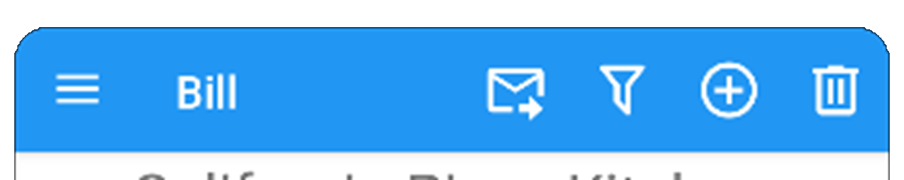

Most DivisiBill pages include a tool bar at the top of the page, it looks something like this:

Typically a colored background with both a contrasting page title and contrasting icons in the foreground. The same icons are used on different pages, here is a list of icons you may see, not all of these icons are currently used though most are:
| Name | Icon |
|---|---|
| Add | |
| Camera | ﴹ |
| Cancel | |
| Check (approve something) | |
| Close | |
| Cloud Folder | or |
| Crop | |
| Decrement | |
| Delete | 啕 |
| Download | , ﭙ or |
| Edit | |
| Exit | |
| Filter On/Off | / |
| Home Folder | or |
| Images | 亮 |
| Import | |
| Increment | |
| Load | |
| Local File | |
| | |
| Menu | |
| Null | |
| OCR | |
| Person Edit | |
| Remote (cloud) File | |
| Replace | |
| Restore | 連 |
| Save | |
| Share | |
| Sort | |
| Undo | |